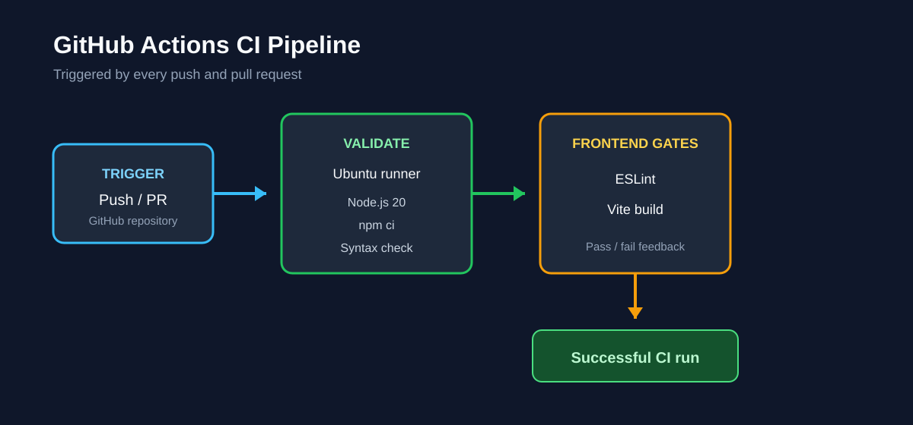

CI Pipeline
Implementation Report
MERN Book CRUD application

MERN Book CRUD application
Implement a basic continuous integration pipeline that runs automatically when changes are pushed to GitHub or submitted through a pull request.

push and pull_request triggers.npm ci.node --check server.js..gitignore to protect credentials, dependencies, and build output.App.jsx and BookTable.jsx.Books.jsx to satisfy the React lint rule.cd backend npm ci node --check server.js cd ..\frontend npm ci npm run lint npm run build
git init -b main git remote add origin https://github.com/Lola381/Lab2.git git fetch origin main git add . git commit -m "Add MERN book CRUD app and CI workflow" git merge origin/main --allow-unrelated-histories --no-edit git push -u origin main
$localCommit = git rev-parse HEAD
$remoteCommit = (git ls-remote origin refs/heads/main).Split("`t")[0]
git status --short
validate job passed all five stages: backend dependency installation, backend syntax check, frontend dependency installation, frontend lint, and frontend build.The frontend reported one non-blocking React Compiler warning for React Hook Form's watch() API. Backend installation reported one moderate npm audit vulnerability; neither issue failed the pipeline.